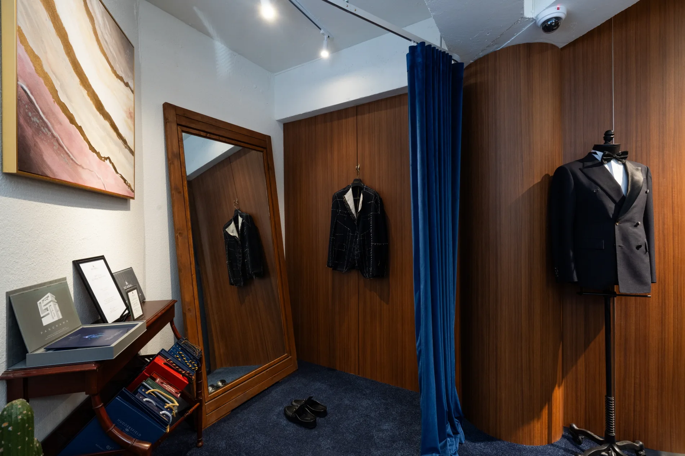
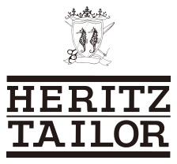

개인 사진 준비 중
마스터 테일러
서계용
- 2015–현재
테일러 아카데미 특임강사
서울 복장 노동조합 위원장
- 2014–현재
헤리츠테일러 마스터 테일러
- 1998–2015
Novotel Ambassador Hotel 강남 D.Custom Tailor
- 1992–1998
소공동 보람양복점
- 1977–1992
명동 Mr. Guy Tailor

Heritz Tailor
두분의 결혼이 한 편의 영화 같을 수 있도록 헤리츠테일러의 수트가 함께 하겠습니다.
브랜드 소개
두 분의 결혼이 한 편의 영화처럼 오래도록 기억될 수 있도록, 헤리츠테일러의 수트가 함께하겠습니다. 헤리츠테일러는 클래식한 수트의 품격을 바탕으로 개인의 취향과 개성을 담은 웨딩 스타일을 제안합니다. 인생의 새로운 시작을 앞둔 당신에게 가장 잘 어울리는 한 벌을 고민하며, 두 사람이 함께하는 장면을 더욱 아름답게 완성하고자 합니다.
헤리츠테일러는 좋은 수트의 기준을 입는 사람에게서 찾습니다. 고객의 체형과 움직임, 평소의 취향과 예식의 분위기를 세심하게 살피고 원단과 색상, 실루엣과 디테일까지 조화롭게 제안합니다. 상담부터 스타일을 완성하는 과정까지 각 선택에 필요한 설명을 더해, 수트가 익숙하지 않은 고객도 자신에게 어울리는 방향을 찾을 수 있도록 돕습니다. 격식을 갖춘 외형과 자연스러운 착용감이 어우러지는 것, 그것이 헤리츠테일러가 추구하는 수트의 가치입니다.
시간이 지나도 빛을 잃지 않는 스타일과 변함없는 정성으로, 두 분의 시작을 함께하고 앞으로 이어질 삶의 소중한 장면에도 어울리는 수트를 제안하겠습니다.
한 벌을 만드는 사람들
마스터 테일러
테일러 아카데미 특임강사
서울 복장 노동조합 위원장
헤리츠테일러 마스터 테일러
Novotel Ambassador Hotel 강남 D.Custom Tailor
소공동 보람양복점
명동 Mr. Guy Tailor
마스터 테일러
헤리츠테일러
로페로테일러
이태원 머큐리
르네상스호텔 제왕 양복점
플라지호텔 20세기 양복점
롯데호텔 해창 양복점
소공동 뉴라이프 양복점
시청 AQ 양복점
을지로 광교 로마 양복점
마스터 테일러
헤리츠테일러 테일러
피치라인
영패션
브랜드 연혁
테일러의 발자취에서
헤리츠테일러의 시작까지.
명동 Mr. Guy Tailor 근무
소공동 보람양복점 근무
Novotel Ambassador Hotel 강남 D.Custom Tailor 근무
헤리츠테일러 브랜드 런칭
매장 확장 이전
법인 전환
헤리츠테일러의 브랜드 아이덴티티
헤리츠테일러의 로고는 브랜드의 이름과 정체성을 전하는 시각적 요소입니다. 매체와 공간에 맞는 구성을 선택하되, 로고의 형태와 비례를 일관되게 유지합니다.
Horizontal logo
HERITZ TAILOR의 영문명과 SINCE 1977을 함께 배치한 구성입니다. 긴 가로 비례를 살릴 수 있는 공간에 사용합니다.

Combination logo
상단 심볼과 두 줄의 영문명을 결합한 구성입니다. 심볼과 브랜드 이름이 하나의 형태로 읽히도록 원본의 배치와 간격을 유지합니다.
Wordmark logo
세리프 서체로 브랜드 이름을 표현한 구성입니다. 글자의 형태와 간격, 가로 비례를 유지해 사용합니다.
로고를 가로 또는 세로로 늘리거나, 일부 요소를 임의로 재배치하지 않습니다. 복잡한 사진이나 무늬 위에서는 로고가 명확하게 보이는 공간을 확보해 주세요.
로고 원본 다운로드 AI